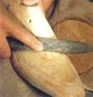
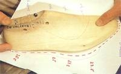
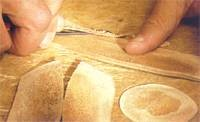
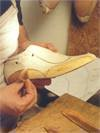
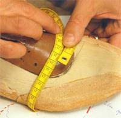
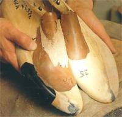

De una horma básica pueden elaborarse hormas a medida a partir de dos métodos característicos. Uno da forma individual a la horma utilizando la sustracción; el otro, la adición Cuando llegan al taller del zapatero, las hormas básicas son siempre algo más grandes de los necesario. Si el pie es más estrecho o el empeine más bajo de la media, el zapatero, basándose en la hoja de medición y utilizando una lima o papel de lija de distintos grosores, da la forma final correspondiente a los zapatos deseados y elabora la horma a medida. Es decir, sustrae material.
De una horma básica pueden elaborarse hormas a medida a partir de dos métodos característicos. Uno da forma individual a la horma utilizando la sustracción; el otro, la adición Cuando llegan al taller del zapatero, las hormas básicas son siempre algo más grandes de los necesario. Si el pie es más estrecho o el empeine más bajo de la media, el zapatero, basándose en la hoja de medición y utilizando una lima o papel de lija de distintos grosores, da la forma final correspondiente a los zapatos deseados y elabora la horma a medida. Es decir, sustrae material.

En primer lugar, el hormero lima la madera sobrante con una escofina gruesa.
A continuación usa una escofina más fina.
Se trata del método de sustracción.
Este método de confección de hormas a medida se remonta a las tradiciones más antiguas. La corrección también se realiza según la hoja de mediciones, teniendo en cuenta los puntos críticos. Los lugares característicos donde el hormero debe aplicar las correcciones son, normalmente, el contorno exterior de la planta, la zona de los metatarsianos, el dedo pulgar, el empeine y el talón. En muy pocos casos dichos puntos son más pequeños de lo normal. Es más frecuente que el pie sea más ancho, el empeine y el pulgar más elevados o el talón más desarrollado. Mediante la adición de varias capas de pie de distintos grosores, se da la forma deseada a la horma. Si las medidas difieren mucho de la media, puede aplicarse más de una capa de piel.

Se comprueba la longitud según los datos de la hoja de medición.

Deben rebajarse los bordes de las capas de piel.
Confeccionar un par de zapatos sobre una horma corregida mediante el método de adición no supone ningún problema para un zapatero. La forma deseada se consigue pegando fragmentos de piel a la horma. No obstante, esos trozos de piel pueden despegarse o deformarse durante la confección. Por tanto, si el cliente desea utilizar la horma para varios pares de zapatos, resulta más seguro usarla como patrón para una horma a medida definitiva.
Las hormas izquierda y derecha corregidas mediante capas de piel se envían de nuevo al taller del hormero, donde se utilizan como patrón para la elaboración de hormas a medida. Bajo las muelas se coloca una horma algo más grande. El copiado definitivo permite obtener en unos minutos la horma adecuada al modelo de zapato elegido.

Los añadidos se pegan en su lugar correspondiente.

Se realizan frecuentes mediciones para comprobar el volumen.

Las hormas corregidas con piel son utilizadas como patrones para las hormas a medida definitivas, que actuarán como sustituto del pie del cliente y de todos sus rasgos característicos.